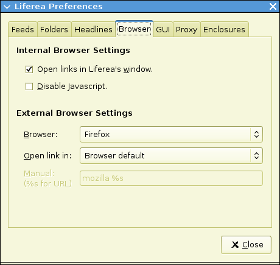
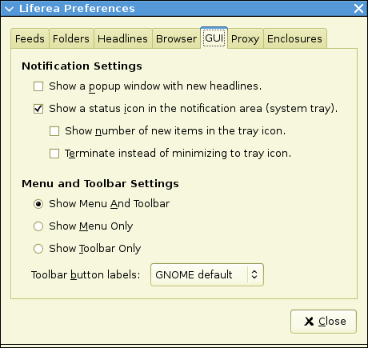
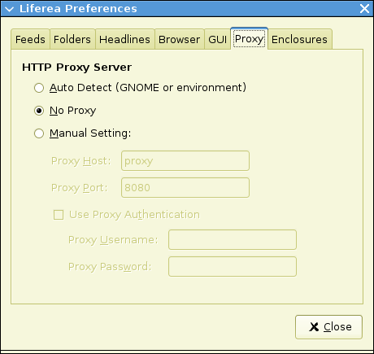
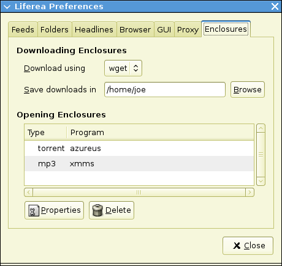

Der Einstellungen-Dialog kann über den Menüpunkt
"Einstellungen" im "Programm" Menü aufgerufen werden.
Der Dialog ist in sieben Registerkarten unterteilt
die im Folgenden beschrieben sind.
Browser Einstellungen

-
Einstellungen für internen Browser: Hier können drei
verschiedene Dinge konfiguriert werden. Erstens das Browsermodul,
daß Liferea verwenden soll. Zweitens kann eingestellt werden
ob Liferea angeforderte Links im internen oder externen Browser
laden soll. Und drittens ob für den internen Browser und die
Schlagzeilenanzeige Javascript aktiviert sein soll.
-
Externe Browser Einstellungen: Werden Links im zur
Anzeige im externen Browser angefordert startet Liferea ein
Browser Kommando, das hier konfiguriert werden kann.
Im ersten Auswahlmenü kann der zu verwendende Browser verändert
werden oder mit "Manuell" ein benutzerspezifisches Kommando
eingestellt werden. Mit dem zweiten Auswahlmenü kann eingestellt
werden wie der Link im eingestellten Browser geöffnet werden
soll.
Nur wenn "Manuell" im ersten Auswahlmenü eingestellt ist wird
das Kommadoeingabefeld auswählbar. Bei der Angabe eines Kommando
darf ein "%s" das später durch die URL ersetzt wird
nicht fehlen. Der Platzhalter sollte doppelt gequoted werden
um Shellprobleme z.B. mit dem #-Zeichen in URLs zu vermeiden.
GUI Einstellungen

-
Benachrichtigung: Aktiviert man die erste Option
zeigt Liferea ein sogenanntes Tray Icon im Benachrichtungsfeld
(verfügbar z.B. in GNOME und KDE). Das Icon ändert sich sobald
neue Schlagzeilen heruntergeladen wurden und wird wieder
zurückgesetzt wenn die Schlagzeilen gelesen werden. Das Icon
kann auch benutzt werden um das Programmfenster zu verstecken
und wieder hervorzubringen.
Die zweite Option aktiviert Benachrichtungs-Popupfenster.
Nach dem Herunterladen neuer Schlagzeilen wird dann ein
Popupfenster mit den Titeln der neuen Schlagzeilen angezeigt.
-
Menü-Einstellungen: Hier kann eingestellt werden, ob
Liferea nur das Hauptmenü oder nur die Werkzeugleiste oder
aber beide anzeigt.
Proxy Einstellungen

-
HTTP-Proxy-Server: Mit dieser Registerkarte kann ein
HTTP-Proxy konfiguriert werden, den Liferea zum Herunterladen
von Feeds benutzt. Die vorgeschlagene Defaultkonfiguration ist
Liferea automatisch den Proxy aus der GNOME Konfiguration
und den Umgebungsvariablen bestimmen zu lassen.
Wenn Liferea den Proxy nicht korrekt erkennt oder ein alternativer
Proxy konfiguriert werden soll ist "Kein Proxy" bzw. "Manuelle Einstellung" auszuwählen.
Aktuell gibt es keine SOCKS-Untersützung.
Anhänge-Einstellungen

Diese Registerkarte erlaubt die Konfiguration des
Enclosure-Handlings von Liferea. Mehr über Enclosures im
Abschnitt Enclosures/Podcasting.